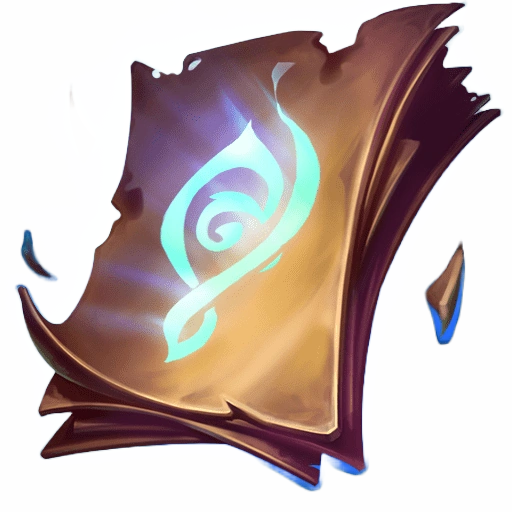
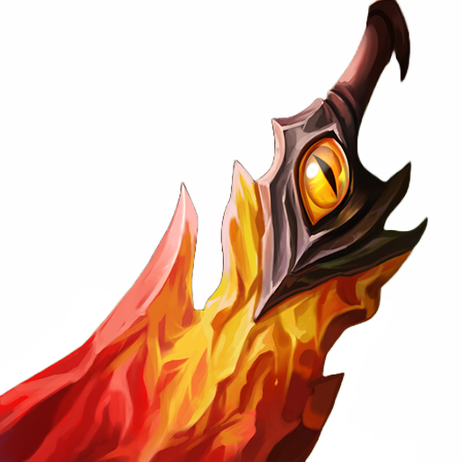
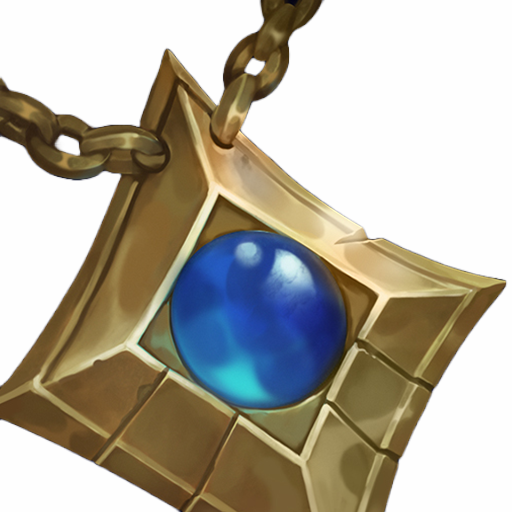
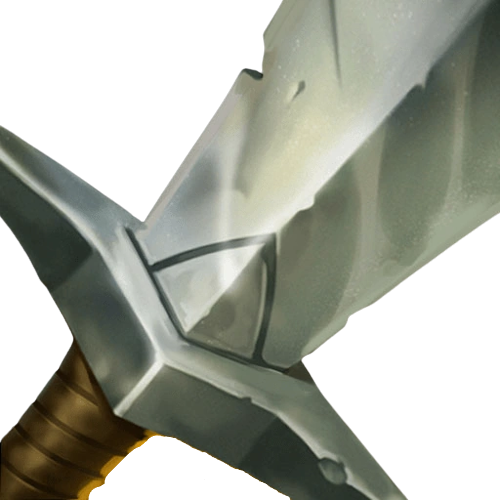
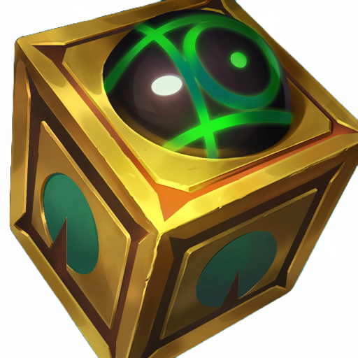
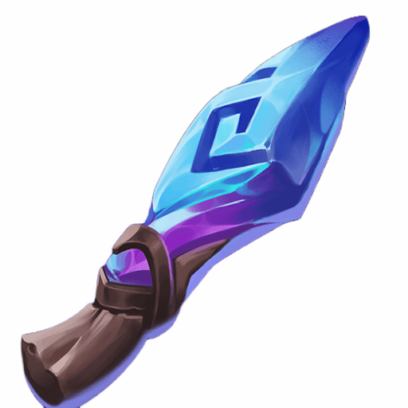
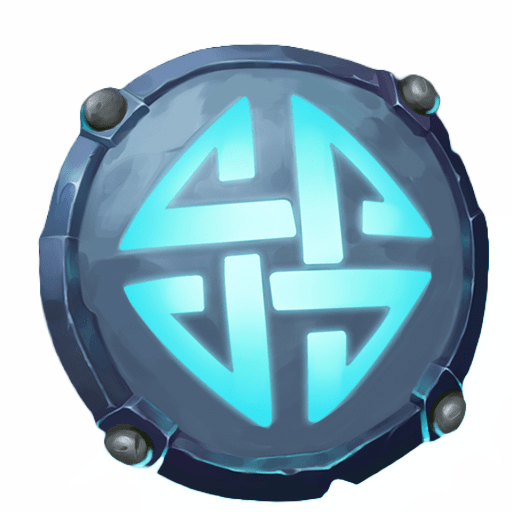
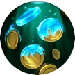
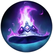

복구권
x 1
검 강화하기는 검을 강화하여 더 높은 단계의 검을 만들어가는 게임입니다.
게임은 크게 검강화, 검도감, 보관함, 제작소, 강화소로 구성되어 있습니다.
각 메뉴에 대한 자세한 설명은 하단의 메뉴 버튼을 클릭하여 확인할 수 있습니다.
각 요소에 대한 자세한 설명은 마우스를 올려 확인하세요.
게임이 진행되는 메인 화면

검의 이미지가 표시되며,999강검의 강화 횟수가 표시됩니다.
죽음의 무도검 이름이 표시됩니다.
강화 성공 확률: 100%다음 단계 강화 성공 확률이 표시됩니다.
강화 비용: 1000000원강화 시 필요한 비용이 표시됩니다.
판매 가격: 2000000원판매 시 얻을 수 있는 금액이 표시됩니다.
 강화하기
보관하기: 검을 보관함에 보관한 뒤 0강부터 다시 시작합니다.
강화하기
보관하기: 검을 보관함에 보관한 뒤 0강부터 다시 시작합니다.마우스를 올려 자세한 정보를 확인하세요.
검의 정보를 확인할 수 있는 화면
마우스를 올려 자세한 정보를 확인하세요.

복구권
x 1

요정의 부적
x 1

롱소드
x 1
마우스를 올려 자세한 정보를 확인하세요.
 300원
1500원
300원
1500원

감시하는 와드석 1/1
주문 도둑의 검 2/5
얼음방패 4/3마우스를 올려 자세한 정보를 확인하세요.
행운 팔찌
성공 확률 증가
신의 손
성공 시 일정 확률로 +2강

대상인
판매 가격 증가
대장장이
강화 비용 감소
무효화 구체
검 파괴 시 복구

마법 모자
조각 최대 드롭 갯수 증가
마우스를 올려 자세한 정보를 확인하세요.